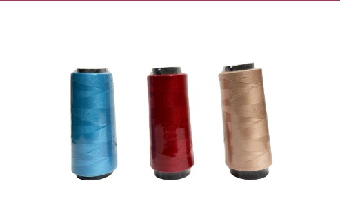
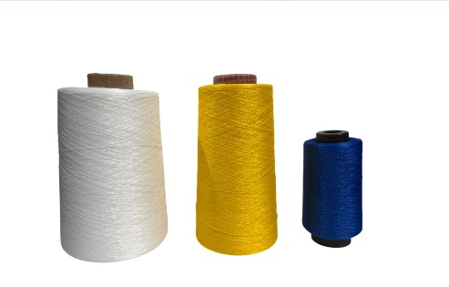
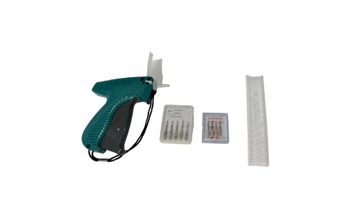
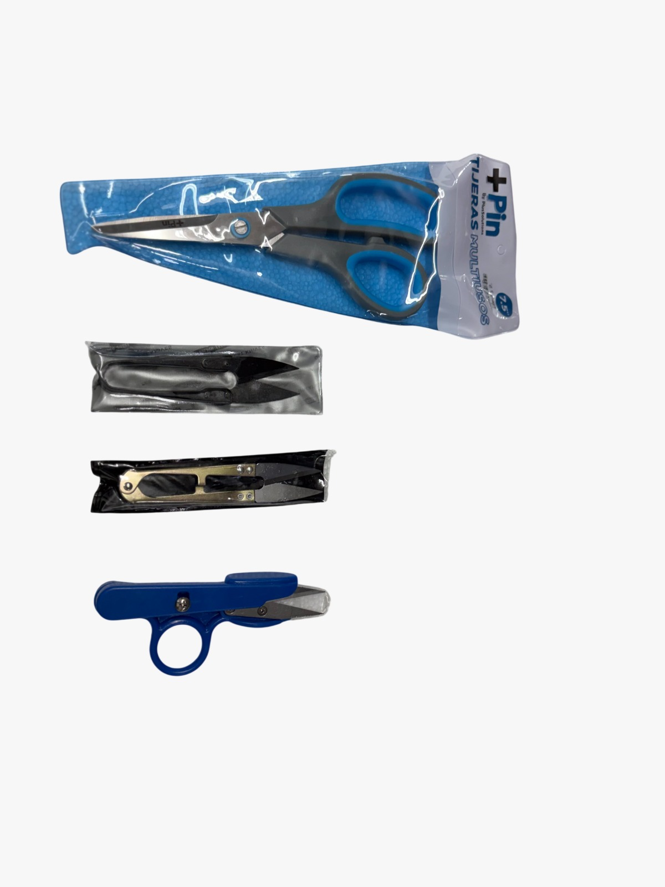
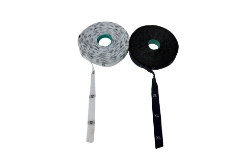

Sobre Nosotros
Somos una microempresa con más de 30 años de experiencia en el sector de la confección, ofreciendo productos confiables y de alta calidad. Nos especializamos en hilos, hilazas, repuestos para máquinas de coser e insumos para confección.
Nuestra trayectoria nos respalda, brindando confianza, atención cercana y compromiso con cada uno de nuestros clientes.
Productos

Hilos
Alta calidad y variedad de colores.

Hilazas
Resistencia y durabilidad para confección.

Etiqueteadoras
Terminación profesional de prendas.

Repuestos de Máquinas
Repuestos para máquinas industriales planas.

Tijeras
Corte profesional y duradero.

Tallas Tejidas
Identificación y acabado de prendas.
Nuestra Historia
General de Hilos e Hilazas es una microempresa que ha crecido con el esfuerzo y compromiso de ofrecer productos confiables en el área de confección. Durante más de 30 años hemos acompañado a talleres, emprendedores y clientes, construyendo una reputación basada en la calidad y la confianza.
Contacto
Teléfono: 314 473 3302
Dirección: Av 8 #10-72 Centro, Cúcuta - Local 9
Horario de atención:
Lunes a sábado: 8:00 AM - 6:30 PM (jornada continua)
Escríbenos por WhatsApp